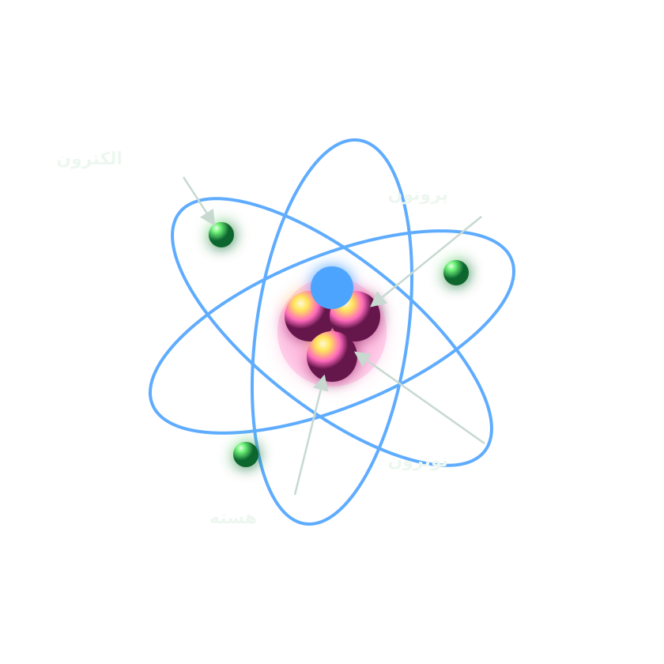
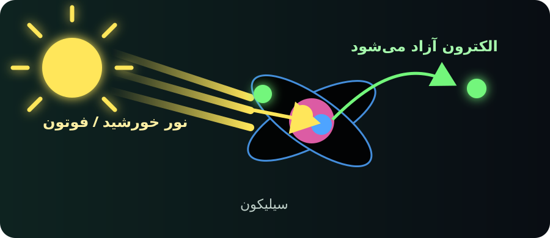
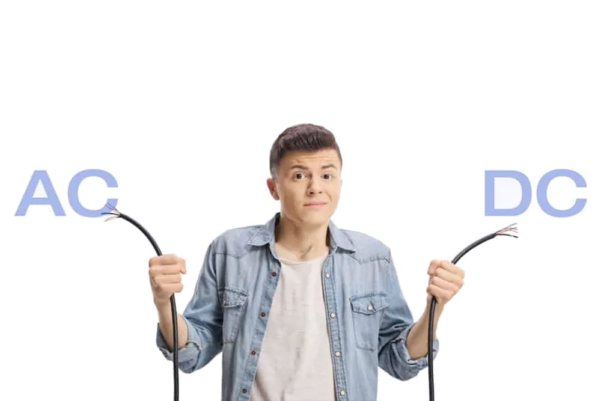

رسانا
در این مواد، الکترونهای لایهی بیرونیِ اتم، آزاد هستند. آنها مثل ماشینهایی هستند که در یک خیابان باز رها شدهاند و میتوانند آزادانه حرکت کنند.
اتم کوچکترین واحد سازندهی ماده است که از هسته (پروتون و نوترون) و الکترونهای گرد آن تشکیل شده است.

هر جا که نگاه کنی، اتم هست. اتمها آجرهای بنیادی جهان ما هستند و هیچ چیز بدون آنها وجود ندارد.
«آزادی»!
الکترونها در همهجا هستند، اما همهی آنها اجازهی حرکت ندارند.
در این مواد، الکترونهای لایهی بیرونیِ اتم، آزاد هستند. آنها مثل ماشینهایی هستند که در یک خیابان باز رها شدهاند و میتوانند آزادانه حرکت کنند.
اینها نه کاملاً آزادند و نه کاملاً اسیر. الکترونهایشان در حالت عادی «خواب» هستند، اما اگر یک انرژی بیرونی (مثل نور خورشید) به آنها برسد، بیدار میشوند و حرکت میکنند!
در این مواد، الکترونها اسیر هستند و محکم به اتم چسبیدهاند. آنها مثل ماشینهایی هستند که ترمزشان کشیده شده و در پارکینگ قفل شدهاند.
سیلیکون فراوانترین عنصر روی زمین بعد از اکسیژن است. اما در طبیعت، سیلیکون خالص پیدا نمیشود؛ بلکه با اکسیژن ترکیب شده و شن، ماسه و سنگ را میسازد. برای ساختن پنل خورشیدی، دانشمندان سیلیکون را از این مواد جدا کرده و خالصسازی میکنند. سیلیکونِ خالصِ خالصشده، پایهی ساخت پنل است.
در کورههای عظیم صنعتی (با دمای حدود ۲۰۰۰ درجه)، شن و ماسه را حرارت میدهند. در این دمای بالا، پیوند بین سیلیکون و اکسیژن میشکند. اکسیژن به شکل گاز از کوره خارج میشود و سیلیکون خالص باقی میماند.
سیلیکون به دستآمده به شکل بلوکهای براقی درمیآید که به آنها ویفر سیلیکونی میگویند. همین ویفرها قلب تپندهی پنلهای خورشیدی (و حتی تراشههای گوشی و کامپیوتر!) هستند.
حالا ما یک مادهی نیمهرسانا (سیلیکون خالص) داریم که الکترونهایش در حالت عادی اسیرند و نمیتوانند آزادانه حرکت کنند. اما یک چیز کم داریم: یک بیدارکننده!
اینجاست که فوتونها وارد میشوند. فوتونها ذرههای کوچک نور خورشید هستند که حامل انرژیاند. وقتی نور خورشید به سیلیکون برخورد میکند، فوتونها به الکترونها برخورد کرده و انرژی خود را به آنها میدهند.
این دقیقاً مثل این است که یک کارفرما (فوتون) به یک کارگر خوابیده (الکترون) ضربهای بزند و بگوید: «بیدار شو! وقت کار است!»
اگر انرژی فوتون به اندازهی کافی باشد (که نور خورشید قطعاً هست)، الکترون از قید اتم آزاد میشود و میتواند حرکت کند. به این پدیدهی شگفتانگیز، «اثر فتوولتائیک» میگویند.

در مرحلهی قبل دیدیم که فوتونها (نور خورشید) الکترونها را از خواب بیدار میکنند. اما اگر الکترونهای بیدارشده را به حال خودشان رها کنیم، دوباره به دام میافتند یا فقط بیهدف اینور و آنور میروند. ما به یک مدیر کارگاه نیاز داریم تا به این کارگران جهت بدهد.
اینجاست که ساختار هوشمند پنل خورشیدی وارد عمل میشود. دانشمندان در زمان ساخت پنل، سیلیکون را به دو لایهی متفاوت تقسیم میکنند:
با اضافه کردن مقدار کمی فسفر، الکترونهای اضافی در آن ایجاد میشود.
با اضافه کردن مقدار کمی بور، جای خالی برای الکترونها (حفره) ایجاد میشود.

وقتی این دو لایه روی هم قرار میگیرند، در مرز برخوردشان یک میدان الکتریکی ایجاد میشود. این میدان الکتریکی کارش این است که:
نتیجه چه میشود؟ الکترونها در یک سمت پنل جمع میشوند. این تجمع الکترونها باعث ایجاد اختلاف پتانسیل (همان ولتاژ) میشود.
حالا اگر ما با یک سیم، دو لایهی n و p را به هم وصل کنیم (مدار بسته)، الکترونهای آزادشده از داخل سیم عبور میکنند و به سمت دیگر میروند. این حرکت جهتدار الکترونها در سیم، همان چیزی است که ما به آن «جریان برق مستقیم» یا DC میگوییم.